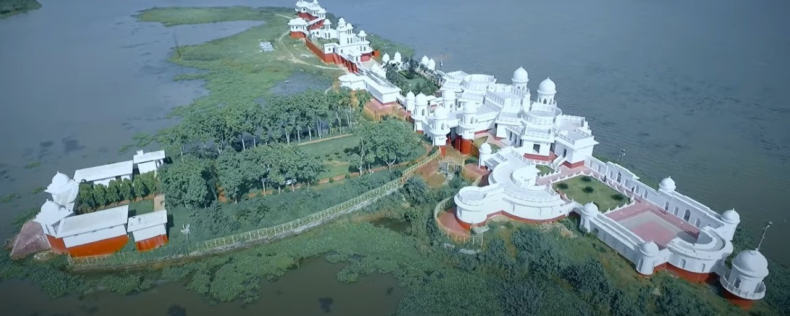
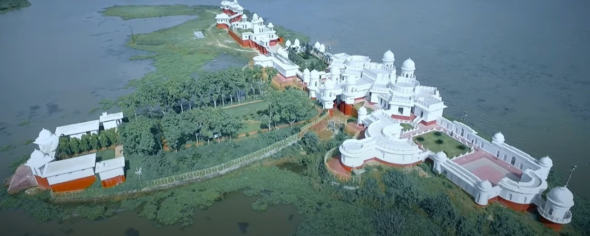
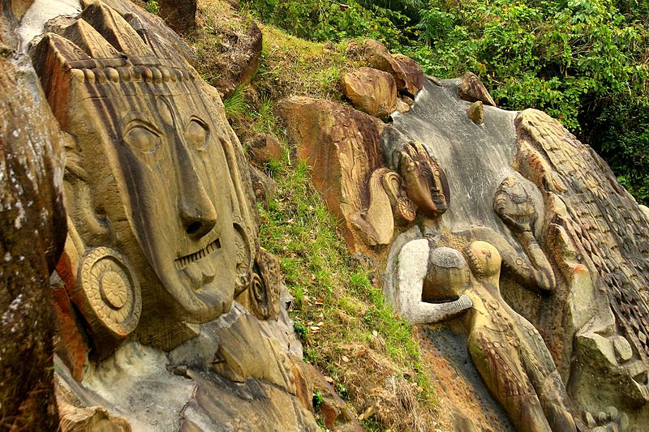
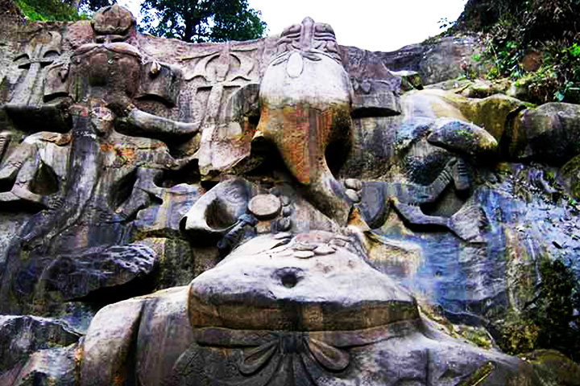
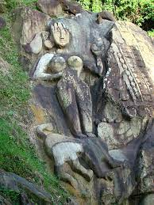
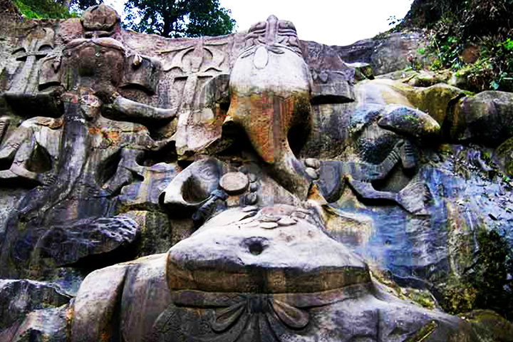
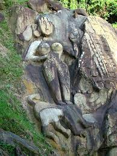

Udaipur Palace
Udaipur Palace, also known as Tripura Sundari Temple, is a historical site in Udaipur. Explore the architectural beauty and religious significance of this ancient palace.


Udaipur Palace, also known as Tripura Sundari Temple, is a historical site in Udaipur. Explore the architectural beauty and religious significance of this ancient palace.
Neermahal, located in the middle of Rudrasagar Lake, is a water palace with a unique blend of Hindu and Muslim architectural styles. Discover the scenic beauty and cultural importance of this palace.

 

Unakoti is an archaeological site with rock-cut sculptures and carvings dating back to the 7th century. Explore the numerous rock-cut figures and the ancient legends associated with Unakoti.
 


